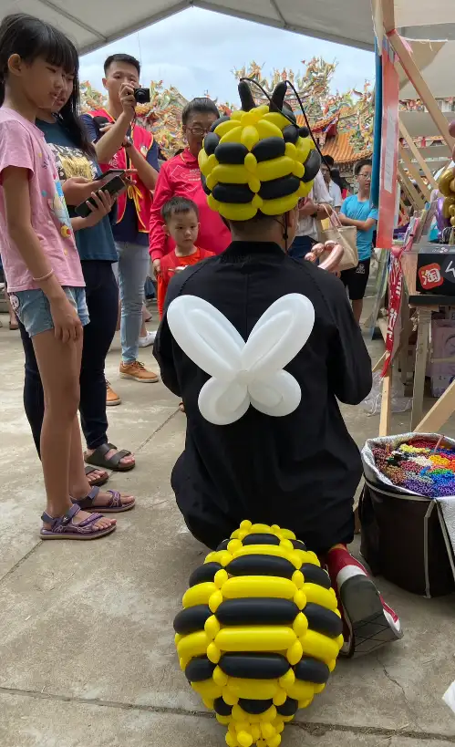
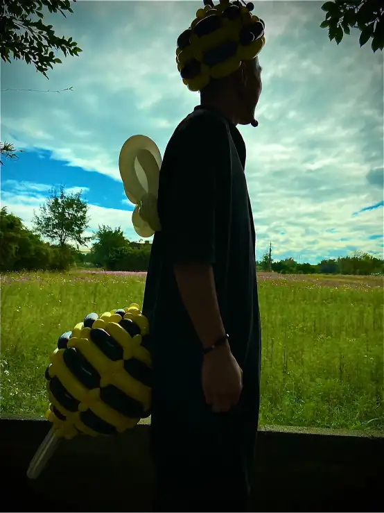

氣球大叔 Sony × 桃園綠色生活悠遊節｜蜜蜂魔術互動紀錄
一場結合綠能生活主題與親子氣球魔術互動的難忘市集演出。
📍 地點：桃園市 綠色生活悠遊節
活動亮點總覽
2022 年桃園綠色生活悠遊節在蘆竹區戶外綠地熱鬧登場。氣球大叔 Sony 化身成可愛蜜蜂形象，以「綠能與自然」為核心，與現場親子觀眾互動。融合專業手折氣球技巧與趣味魔術表演，成功為綠色生活節活動增添無限趣味與活力。

親子互動 × 環境教育蜜蜂魔術
活動現場，Sony 透過蜜蜂造型帽與手折蜂翼的裝扮，邀請孩子們上台助演。孩子們不僅能親身參與魔術，更能近距離感受氣球藝術的色彩變化，將環保意識寓教於樂。
- 🐝 特色裝扮： 蜜蜂造型帽＋立體手折蜂翼，完美契合悠遊節自然主題。
- 🎩 互動劇場： 小朋友受邀上台參與，成為全場驕傲的小小助演嘉賓。
- 🌿 教育意涵： 結合綠能市集氛圍，讓環保教育透過表演更顯溫度。
活動現場熱烈回響
來自桃園各地的親子家庭共襄盛舉，現場充滿探索的歡笑。家長們紛紛讚許表演既具娛樂性又富有教育意義。氣球大叔的蜜蜂表演成為當天悠遊節的人氣焦點，成功帶動了整場市集的氣氛。

「孩子拿到氣球那一刻真的好開心，Sony 老師的親切互動讓整個綠色市集變得非常有溫度！」－ 現場家長分享回饋
結語：綠色市集與親子魔術的完美結合
若您正在籌劃綠生活市集、親子戶外教育活動或社區家庭日，氣球大叔 Sony 能為您量身打造環保主題的表演方案。透過手折氣球教學與魔術互動，讓活動現場生動活潑且深具教育意義，是政府大型策展與企業家庭日的不二之選。
🔥 更多桃園在地與政府大型活動推薦：
- 👉 官方大型策展：基隆城市博覽會｜國門廣場萬人魔術氣球秀
- 👉 桃園校園案例：桃園大溪仁和國小畢業典禮｜粉嫩氣球拱門佈置
- 👉 桃園商場案例：桃園台茂購物中心聖誕活動｜造型手折氣球專業演出